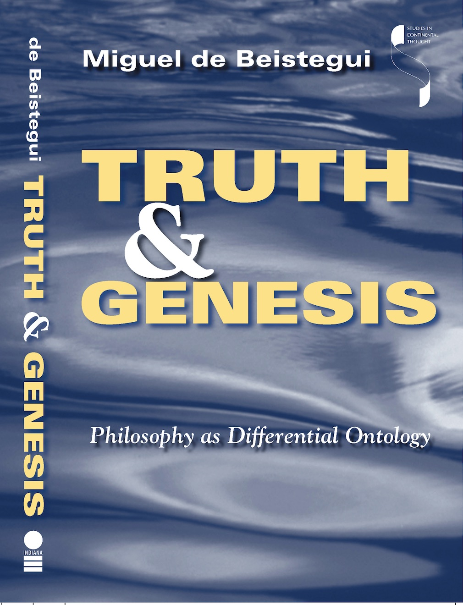

Miguel de Beistegui
Philosopher

Historical Studies: Heidegger, Deleuze, Foucault, and Lacan
My engagement with twentieth-century philosophy has unfolded as a sustained dialogue with three decisive figures: Heidegger, Deleuze, and Foucault. In the trilogy I devoted to Heidegger —on politics, the major themes of his thought, and a reorientation of his legacy— I explored how ontology, history, and the political intertwine, while intervening critically in his work. With Gilles Deleuze, I investigated immanence, desire, and the reversal of Platonism, and explored experimental forms of philosophy—from the rhizome to the challenge it poses to the very idea of the book. Engaging with Michel Foucault, I examined truth, resistance, subjectivation, and government, discovering how philosophy can function as a practice of critique rather than a static doctrine.
“Philosophy is not a museum of ideas; it is a living archive whose concepts must be tested and reshaped in response to our present.”
Read more: Heidegger and the Political; Immanence and Philosophy

The Ontology of Difference
Building on these foundations, I turned to the question of being and difference. In Truth and Genesis: Philosophy as Differential Ontology (2004), I propose an ontology in which difference is not derivative but the very name of being. Identity emerges from difference, not the other way around. I reinterpret the ontological difference—the distinction between being and beings—as the difference between the virtual and the actual: between reality as a field of powers and potentials, and reality as it takes historical form. Difference is not merely conceptual but a generative force, giving rise to everything from planets and organisms to social movements and works of art. This work marked a turn toward a philosophy of genesis, attentive to how realities emerge, transform, and interact.
“Ontology becomes a philosophy of genesis, attentive to how realities emerge, transform, and interact.”
Read more: Truth and Genesis

The Aesthetics of Metaphor
At the same time, I discovered that philosophy cannot be separated from aesthetic experience. In Jouissance de Proust (Proust as Philosopher), I explored how Proust’s art transforms memory, time, and desire into a metaphoric experience that illuminates ontological difference. My study of Chillida, Éloge de Chillida/In Praise of Chillida (2011), revealed how sculpture, space, and material can themselves express thought. In Aesthetics After Metaphysics: From Mimesis to Metaphor (2012), I developed a broader philosophical framework: aesthetic experience enacts difference, connecting phenomena that would otherwise remain isolated and revealing dimensions of reality that go beyond mere representation. For me, metaphor is never ornamental; it is a generative way of thinking and feeling, reshaping both our perception of the world and our understanding of being.
“Metaphor is never ornamental; it is a generative way of thinking and feeling.”
Read more: Jouissance de Proust; Éloge de Chillida; Aesthetics After Metaphysics

The Ethics and Politics of Desire
From ontology and aesthetics, my attention turned to desire —its ethical and political dimensions. In The Government of Desire: A Genealogy of the Liberal Subject (2018), I show that liberalism is not just a set of beliefs, but a technique of governing ourselves and others through desire. Since the eighteenth century, desire has been recognized as a mechanism through which power operates—not to repress, but to organize and mobilize. Liberalism structures desire along three axes—economic interest and utility, sexuality, and the quest for recognition—producing the figures of homo economicus, homo sexualis, and homo symbolicus. This genealogy continues in Lacan: A Genealogy, where Lacan’s theory of jouissance critiques these regimes of desire, and in L’élan du désir, where I propose an ethics of voluptuousness: desire conceived not as lack or satisfaction, but as excess, intensifying our capacities and opening paths to new forms of life.
“Desire is not something to be controlled—it is a force that can expand our lives and capacities.”
Read more: The Government of Desire; Lacan: A Genealogy; L’élan du désir

Critique & Crisis
Finally, my reflection turned to the crises of our time. The celebrated “end of history” has given way to multiple, overlapping crises within liberal—and especially neoliberal—democracies: economic, ecological, political, social, cultural, and bodily. The language of crisis is ubiquitous, yet often emptied of meaning, swinging between paralysis and cynical manipulation. In Crisis: A Critique (2026), I approach crisis not as self-evident but as a construction—a discursive event through which we understand, order, and govern the world. Drawing on examples and traditions from ancient medicine to political economy, law, philosophy, and the earth sciences, I undertake a critical archaeology and typology of crisis. This work represents a vital challenge: to recalibrate thought itself and to recover the capacity for critique in an age that seems constantly to threaten it.
“To confront a crisis, we must first confront our own capacity for critique.”
Read more: Thought under Threat; Crisis: A Critique